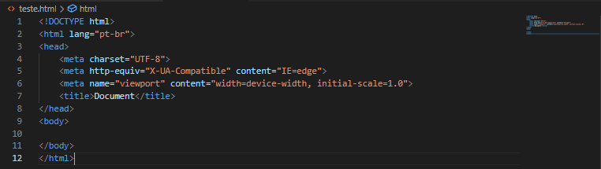

Harvard Mark I (1944): Também conhecido como Automatic Sequence Controlled Calculator (ASCC), foi um dos primeiros computadores eletromecânicos. Desenvolvido em colaboração entre Harvard e IBM, o Mark I tinha 15 metros de comprimento e 2,5 metros de altura, e utilizava cartões perfurados para entrada e saída de dados
ENIAC (1946): O primeiro computador eletrônico digital de uso geral, o ENIAC utilizava 18.000 válvulas e consumia 200 quilowatts de energia. Ele foi revolucionário para cálculos balísticos e outras aplicações científicas
Transistores: Substituindo as válvulas, os transistores permitiram computadores menores, mais rápidos e mais eficientes energeticamente. O uso de linguagens de programação como Assembly também começou a se popularizar
Circuitos Integrados: Os circuitos integrados (chips) substituíram os transistores, aumentando ainda mais a eficiência e a capacidade dos computadores. Esta geração viu a introdução de sistemas operacionais e linguagens de programação de alto nível como COBOL e FORTRAN
Microprocessadores: A introdução dos microprocessadores, que são circuitos integrados muito mais complexos, marcou esta era. Computadores pessoais começaram a se popularizar, com modelos como o Apple II e o IBM PC se tornando comuns. Disquetes e outros meios de armazenamento removível facilitaram a distribuição de software
Voltar
A estrutura básica de um documento HTML é composta por elementos essenciais que formam a base de qualquer página web.
Voltar
Servers são computadores ou sistemas de software dedicados a fornecer recursos, dados, serviços ou programas a outros computadores, conhecidos como clientes, em uma rede. Eles desempenham um papel fundamental na arquitetura de redes e na infraestrutura de TI.
Voltar
Na arquitetura de redes de computadores, um client (ou cliente) é um dispositivo ou programa que solicita serviços ou recursos de um servidor. A relação entre cliente e servidor é a base da computação em rede, onde os servidores fornecem dados, serviços ou recursos, e os clientes os utilizam.
Voltar
Aqui deixo alguns links que podem ajudar a entender melhor o assunto!